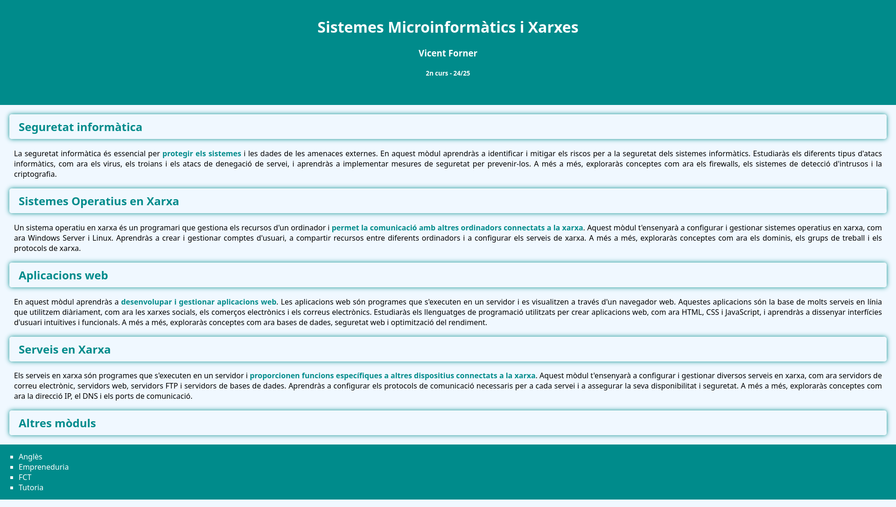

Només per al professor. Lliçó: 08-semantic.html.
header, nav, main, section, footer.<!DOCTYPE html>
<html lang="en">
<head>
<meta charset="utf-8">
<title>Muse</title>
</head>
<body>
<header>
<h1>Muse</h1>
<nav>
<ul>
<li><a href="#band">The band</a></li>
<li><a href="#albums">Albums</a></li>
<li><a href="#songs">Songs</a></li>
<li><a href="#club">Fan club</a></li>
</ul>
</nav>
</header>
<main>
<section id="band">
<h2>The band</h2>
<p>Muse is a rock band from Teignmouth, in England. They started in 1994.</p>
<p>The three members are Matt Bellamy, Chris Wolstenholme and Dominic Howard.</p>
<figure>
<img src="images/band.jpg" alt="The three members of Muse on a stage with blue lights" width="400">
<figcaption>Muse in concert.</figcaption>
</figure>
</section>
<section id="albums">
<h2>Albums</h2>
<table>
<caption>Some of their albums</caption>
<thead>
<tr>
<th>Album</th>
<th>Year</th>
</tr>
</thead>
<tbody>
<tr>
<td>Origin of Symmetry</td>
<td>2001</td>
</tr>
<tr>
<td>Absolution</td>
<td>2003</td>
</tr>
<tr>
<td>The Resistance</td>
<td>2009</td>
</tr>
</tbody>
</table>
</section>
<section id="songs">
<h2>My favourite songs</h2>
<article>
<h3>Hysteria</h3>
<p>A bass line that everybody recognises.</p>
</article>
<article>
<h3>Starlight</h3>
<p>The song I listen to when I am tired.</p>
</article>
</section>
<section id="club">
<h2>Join the fan club</h2>
<form action="#" method="post">
<p>
<label for="fname">Name</label>
<input type="text" id="fname" name="fname" required>
</p>
<p>
<label for="fmail">Email</label>
<input type="email" id="fmail" name="fmail" required>
</p>
<p>
<button type="submit">Join</button>
</p>
</form>
</section>
</main>
<footer>
<p>© 2026 Marc Ferrer. A fan page, not official.</p>
</footer>
</body>
</html>div genèrics s'han canviat per etiquetes amb significat: header (títol i menú), nav, main amb una section per cada bloc, article per a cada cançó (contingut independent) i footer. El resultat visual és el mateix.alt que falta, una etiqueta sense tancar, un id repetit...) fins que apareix el missatge verd "Document checking completed. No errors or warnings to show". La pàgina de l'exercici 8.1 passa el validador sense errors.header, nav, main and footer. Write down which ones you found and which ones are missing.header (logo i secció de capçalera), nav (menú de seccions), main (notícies) i footer (contacte i avís legal) trobats; section i article per a cada notícia també hi eren. Les que falten solen ser aside, perquè moltes webs usen div amb classes. Es compta amb DevTools (Elements) i buscant les etiquetes. Anota't els resultats de la web concreta que trie cada alumne.header, nav, main, section, article, footer. The result must look the same.
Fitxer de partida: ex1.html
Solució ja feta en un fitxer: exercises/08-semantic/ex1_solved.html